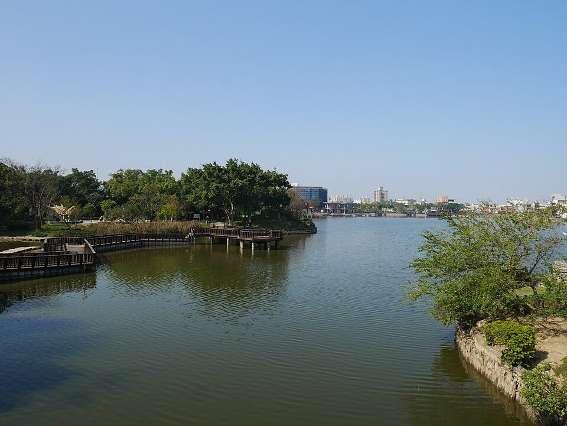

龍潭大池南端實景。拍攝點與水利構造位置需現地確認。
追蹤龍潭大池的水源、渠道、分水門與可能地下化的構造，將埤塘轉化成可分析的系統。
龍潭大池不只是公園湖面，它曾是灌溉埤塘，與龍潭圳、水源渠道、分水門及周邊農地形成完整的人造水文網。

圳路系統：公開資料稱「龍潭圳」是龍潭大池輸送灌溉水源到龍潭區境內的水圳，別名列為「石門大圳龍潭分渠」。
水源與路徑：資料指出上游取水口屬老街溪上游，水源引自三林里的風櫃口埤，再經水圳渠道引入龍潭大池。
規模數據：龍潭圳幹線約 3,700 公尺，小給水路約 1,000 公尺，分汴水門 40 處；龍潭大池有效容積約 165,000 立方公尺，堰堤長約 1,200 公尺，高約 5.50 公尺。
不要只拍漂亮風景；請用「水從哪裡來、往哪裡去、如何被控制」三個問題找構造。
| 目標 | 現場要找什麼 | 拍攝重點 | 找不到時怎麼辦 |
|---|---|---|---|
| 進水口 | 水泥管口、渠道匯入口、水流聲、抽水機房、鐵柵欄。 | 遠照看相對位置，近照拍管口或水流方向。 | 沿岸繞行一圈，開 Google 地圖衛星模式找細長水溝。 |
| 出水口/閘門 | 閘板、手輪、鐵門、水位尺、渠道起點。 | 拍閘門、標示牌、下游渠道方向。 | 若水路地下化，拍疑似水泥小房子與排水孔，並標註「推測」。 |
| 溢洪道 | 低矮溢流口、排洪渠道、連接道路側溝的缺口。 | 拍高低差與可能溢流路徑。 | 枯水期看不到溢流是正常的，可改做功能推理。 |
| 分水門 | 渠道上的小閘門、分流口、農田旁水路。 | 拍主渠、分渠、流向三者關係。 | 訪問附近居民或農民：平常何時放水？誰管理？ |
真正的放水規則可能由管理單位、水位、灌溉期與降雨決定。專題可以先用假設模型表示，再用訪談與現場紀錄修正。
IF 進入灌溉期 AND 下游農田需水:
檢查大池水位
IF 水位高於安全下限:
開啟出水閘門或管線
依分汴水門分配到各支線
ELSE:
暫停供水或等待補水
ELSE IF 豪雨且水位過高:
啟動溢洪/排水路徑
ELSE:
維持蓄水與休憩水位如果現場找不到明顯進水口，這反而是很好的導覽點。可能原因包括：地下管線化、都市化後水路被蓋住、抽水機房取代明渠、以雨水或地下水補注，或舊進水路已失去原功能。